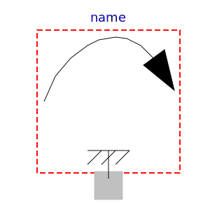

.
ObsoleteModelica3
.
Mechanics
.
Rotational
.
Interfaces
.
PartialSpeedDependentTorque
Information
Partial model of torque dependent on speed that accelerates the flange.
Generated at 2018-10-20T17:02:17Z by
OpenModelica 1.13.0~dev-1491-g87333c1